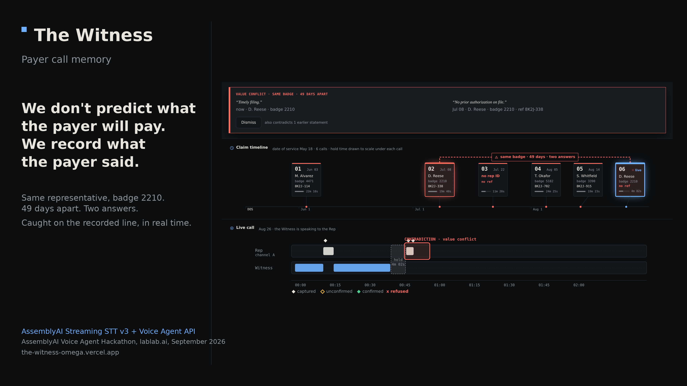
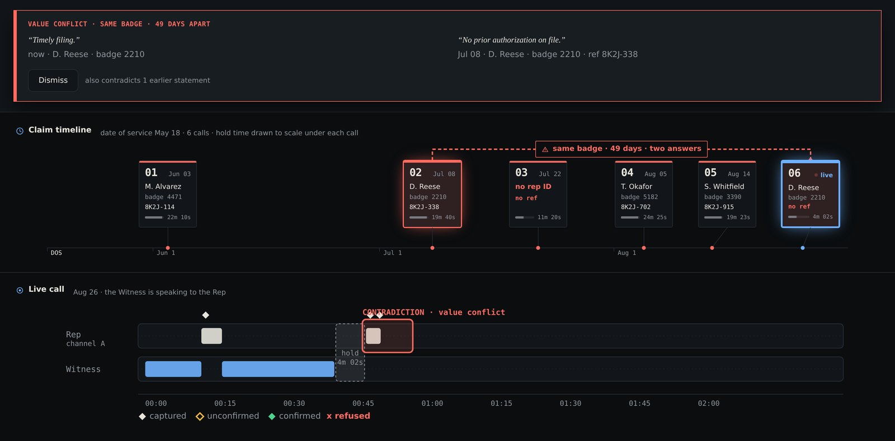

"It's denying on a diagnosis code."
"Which one?"
"I don't have that level of detail on my end."
25 min
and $13.80 of staff time per manual phone claim-status inquiry
19%
of in-network claims denied; under 1% of denials ever appealed
Weeks later a different representative gives a different answer, and nothing in the revenue cycle notices. Appealing means reconstructing what the payer said, and nobody can.
Call 03, July 22. Twenty-five minutes on the phone. The rep would not give a name or badge, would not say which diagnosis code, would not give a reference number.
The claim note afterwards reads "denied, dx issue, call back". Everything that could be quoted in an appeal is gone. Three refusals happened and none of them is on paper.
The Witness records a refusal as a row: REFUSAL · asked which diagnosis code · rep declined to specify · 14:37. The absence is the evidence.

The Rep's audio goes to Streaming STT v3. Transcription only, verbatim, never cleaned. Keyterms are seeded from the claim and the ledger before the call.
The Witness speaks through the Voice Agent API. It is never sent audio. It never calls tools. It never writes the ledger. By choice.
Speaker identity is structural: which socket carried the audio. Never diarization.
Every line the Witness speaks is assembled by our code from statement rows and handed over with reply.create. A self-check compares every number it actually says against the record.
The model is a mouth, not a hand. A sentence the model invented cannot be played back, and playing it back is the whole product.
Append-only ledger. A statement is never updated or deleted. A later, conflicting statement is a new row. The history is the product.
Hash-chained. Each row's hash covers the one before it. The appeal packet carries the chain head; anyone holding the log can recompute it.
Five contradiction kinds plus refusals. Value conflict, existence denial, status flip, commitment violation, policy inconsistency. A refusal is a row, not a blank.
Confidence is a state, never a percentage: confirmed, unconfirmed, not captured. An unconfirmed reference number triggers a spoken read-back.
The before-you-hang-up gate is an exit condition: the call does not close while a required field is missing and not refused.
Spoken alphanumerics are the hard case in speech recognition. Reference numbers, member IDs and badge numbers are exactly that, and a wrong one is a fabricated fact in an appeal.
No accuracy percentage is claimed anywhere. Degraded audio is the test input, and the read-back loop is what is shown handling it.
| Layer | State |
|---|---|
| Statement extraction, contradiction engine, ledger, hash chain, call plan, speech assembly | built, 208 unit tests |
| Console, appeal packet, worklist import, multi-patient roster | built, deployed |
| Live Mode A on two AssemblyAI sockets, in-browser call recorder | built, deployed |
| Demo video call | scripted Rep on the real deployed console, both modes, stated on screen; narrated by an AssemblyAI voice agent |
| Live Mode B (Whisper mode on live audio), payer inconsistency index | roadmap |
Statement extraction is rule-based on the demo vocabulary; a differently phrased denial is captured as a verbatim quote, not as a typed fact. That boundary is deliberate: the model never touches evidence.
$25.7B
provider cost of claims adjudication, up 23% year on year
$57.23
administrative cost per denied claim
73%
of providers cite unclear denial reasons or underpayments
Target user: outsourced medical billing companies and hospital central billing offices. Named teams with a denial queue, not "healthcare".
Sizing: CAQH's published $2.4B medical savings opportunity for claim-status transactions (2024 edition). We do not reconstruct a volume-times-price figure; only 2% of 2.82B inquiries are fully manual. The 2025 edition puts claim status at 81% electronic and the remaining medical savings opportunity at $18.7B across all transactions.
Why it needs AI: the record has to be made while the call is happening, by something that can hear a reference number, compare it to six earlier calls and speak in under two seconds. A person on the call cannot do that and take notes.
| Makes the call | Records it | Remembers across calls | Flags contradictions live | Citable evidence | |
|---|---|---|---|---|---|
| AI payer-call agents (Infinitus, Outbound AI) | yes | yes | per task | no | no |
| Denial-management platforms (Waystar, Experian Health, AKASA) | no | no | claim status only | no | no |
| Call recording and QA tools | no | yes | no | no | audio only |
| Status quo: claim notes | the biller does | no | a line of shorthand | no | no |
| The Witness | rides along or speaks | yes | whole claim history | under 2 s, spoken | quotes, hash, offsets |
Our wedge: cross-call payer memory and an evidence-grade record. We witness the call rather than replace the biller, so nothing about the workflow changes on day one. AKASA's own pitch is to predict whether, when and how much a payer will pay. We record what the payer said.
The console names the representative, because a statement without an attributable speaker is not citable.
We will not build rep scoring. Ranking call-centre workers by contradiction rate is a surveillance product wearing an evidence product's clothes. Attribute individuals because evidence requires it; aggregate only at the payer level.
https://the-witness-omega.vercel.app
https://github.com/velez2689/the-witness
Scripted path: press Start call. No microphone, no network, no session opens.
Live path: Be the Rep (live), headphones, Chrome. Two AssemblyAI sessions open on click and close on every exit path.
Next.js on Vercel. AssemblyAI Streaming STT v3 and Voice Agent API. MIT licence. All demo data synthetic; no PHI; no CPT descriptor text; no accuracy claims.